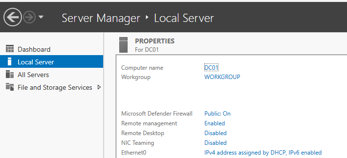
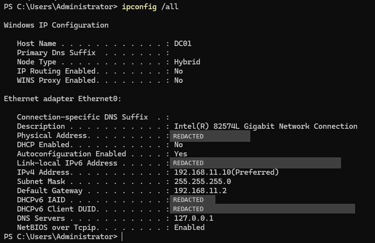

Task
Configure a static IPv4 address on DC01 before installing Active Directory Domain Services.
Configuration
- Host name
- DC01
- DHCP
- Disabled
- IPv4 address
- 192.168.11.10
- Subnet mask
- 255.255.255.0 (/24)
- Default gateway
- 192.168.11.2
- DNS server
- 127.0.0.1
- VMware DHCP pool
- 192.168.11.128 to 192.168.11.254
Method
Configured the static address using PowerShell in an elevated session:
New-NetIPAddress -InterfaceAlias "Ethernet0" -IPAddress 192.168.11.10 -PrefixLength 24 -DefaultGateway 192.168.11.2
Set-DnsClientServerAddress -InterfaceAlias "Ethernet0" -ServerAddresses 127.0.0.1Documentation
Configured DC01 with a static IPv4 address so the server maintains a consistent network address. A stable IP address is important for a Domain Controller because client computers will later depend on it for services such as Active Directory authentication and DNS.
Selected 192.168.11.10 to keep the Domain Controller outside the VMware DHCP address pool (192.168.11.128 to 192.168.11.254) and prevent potential IP conflicts with dynamically assigned addresses.
The VMware DHCP range was verified through Virtual Network Editor → VMnet8 → DHCP Settings.
Verification
Verified the final network configuration in PowerShell using:
ipconfig /allThe output confirmed the host name DC01, DHCP disabled, the IPv4 address 192.168.11.10, subnet mask 255.255.255.0, default gateway 192.168.11.2 and DNS server 127.0.0.1.
Evidence

